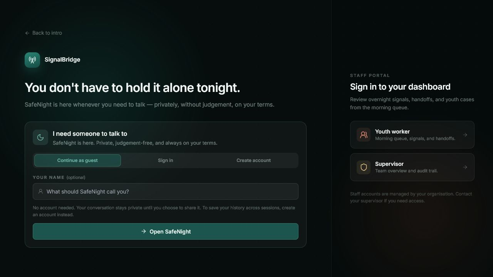
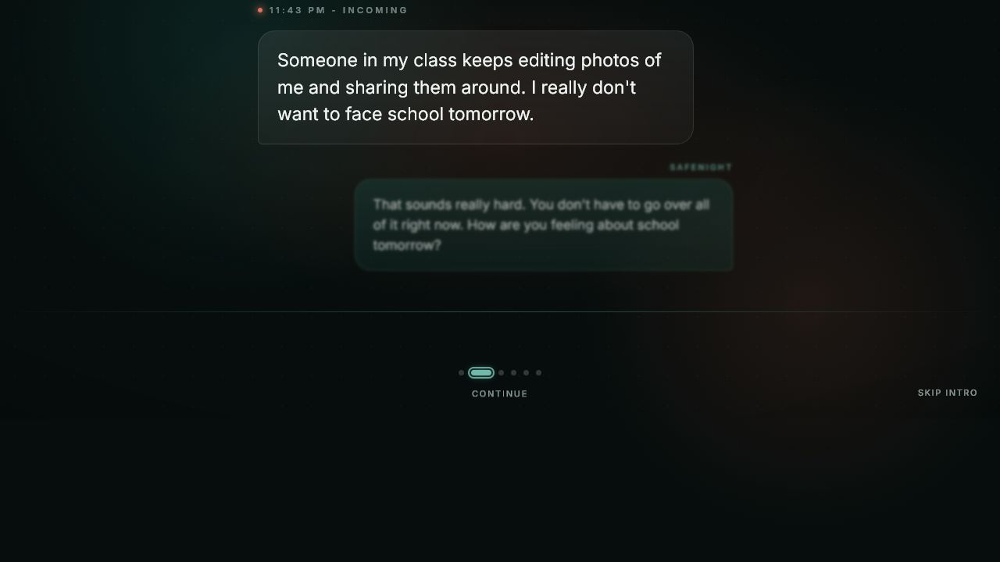
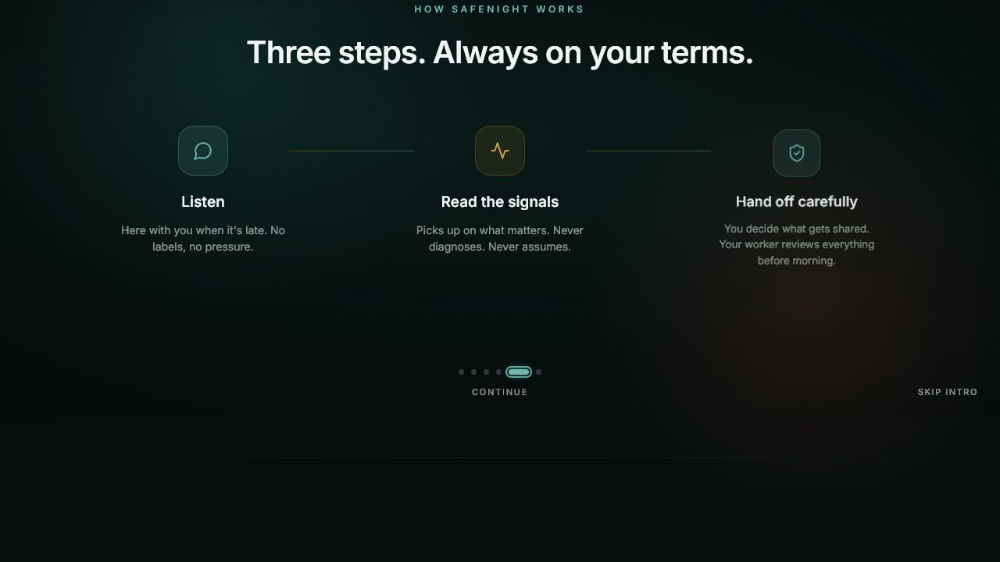

A
Development
- Java
- JavaScript
- TypeScript
- React & Next.js
- HTML & CSS
- Node.js
Aspiring Full Stack Developer · Year 2 IT Student
I build practical, user-friendly web applications that connect thoughtful interfaces with reliable backend logic and database-driven features.
01 / Profile
I enjoy turning real problems into reliable digital products people can use with confidence.
I am Senthil Nathan Mruthulan, a Year 2 Information Technology student at Singapore Polytechnic pursuing full-stack development. My experience spans real-user web applications, AI-assisted hackathon products, database-backed systems and collaborative delivery under pressure.
02 / Capabilities
A focused toolkit for building, testing and improving dependable software.
A
B
C
D
03 / Experience
Technical growth supported by customer-facing work, student leadership and community involvement.
Work experience
Watsons Singapore · Part-time
Education · Apr 2025–May 2028
Singapore Polytechnic
Leadership & outreach
Supported communication between classmates and lecturers, and helped with student-facing outreach including Open House 2026 and First Steps with SP.
Student leadership
Youth Harmony Chapter · Singapore Polytechnic
Languages
Native or bilingual proficiency
04 / Featured work
Singapore Polytechnic’s qualifying competition for Dell InnovateFest 2026
An AI-assisted, consent-based support platform that helps youth workers maintain continuity of care when vulnerable young people reach out after working hours.

Live product · Youth and staff entry01 / Achievement
Won the top prize SP InnovateDash 202602 / Progression
Selected for the finals Representing Singapore Polytechnic at Dell InnovateFest 202603 / Team
Dell-icious Bugs Competition teamContext
The problem
Youth workers may not see difficult messages sent after working hours until the following morning. Important context can be lost, and the young person may have to repeat a painful experience when support resumes.
The solution
SignalBridge receives after-hours messages, identifies possible support and risk signals, obtains consent before sharing information and prepares a structured handoff brief for the assigned worker.
Workers receive prioritised cases, workload information and auditable records of safety-related actions. The system supports human judgement rather than replacing youth workers or acting as an autonomous counsellor.
My primary role
I was primarily responsible for the youth-facing experience and SafeNight Companion UX. My focus was making the chat, consent and handoff journey feel safe, understandable and approachable for young users.
01
02
03
04
05
Product evidence
Replace these labelled areas with project screenshots when the final images are ready.


End-to-end solution
Technology stack
Next.js · React · TypeScript · Tailwind CSS
Python · FastAPI · OpenAI structured outputs · Deterministic safety fallbacks
PostgreSQL · SQLAlchemy · Alembic
JWT authentication · Telegram · Discord
Pytest · GitHub · Docker · Docker Compose · Render · Kubernetes
The challenge
The greatest challenge was preserving enough context to help the youth worker without diagnosing the young person, replacing professional judgement or sharing sensitive information without consent.
We also had to connect the youth interface, backend, risk-detection process, consent flow, handoff generation and external messaging channels into one reliable end-to-end experience.
What I learned
Featured evidence / 01
Situation
Youth workers could miss important messages sent after working hours.Task
I was responsible for creating a safe and approachable youth-facing experience.Action
I developed the youth chat, dashboard, consent and handoff-preview flow, connected the frontend to the backend, improved the mobile experience and contributed to Discord integration and testing.Result
Our team won the top prize at SP InnovateDash 2026 and was selected to represent Singapore Polytechnic at Dell InnovateFest 2026.05 / Additional work
Selected work across full-stack delivery, AI-assisted workflows and product design.
Autodesk Singapore Hackathon 2026 Champion
An AI co-pilot that helps customer service agents find the right internal information faster while keeping people at the centre of decisions.
Deployed real-client project
A mobile-friendly appointment booking website created for a local barber shop to replace manual WhatsApp-based bookings.
IENT startup project · A grade
A social-thrifting startup concept that combines community, clothing swaps and an AI-assisted digital wardrobe. The team validated the problem through interviews with more than 30 people aged 15–25.